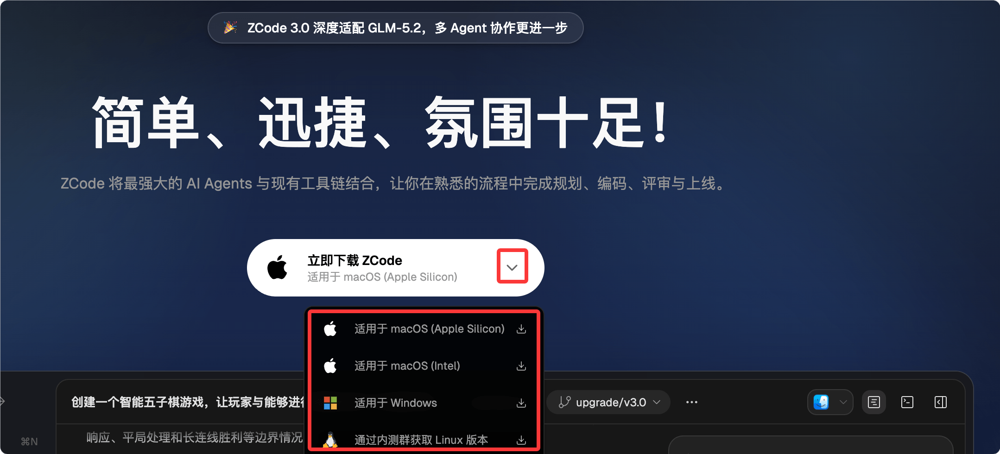
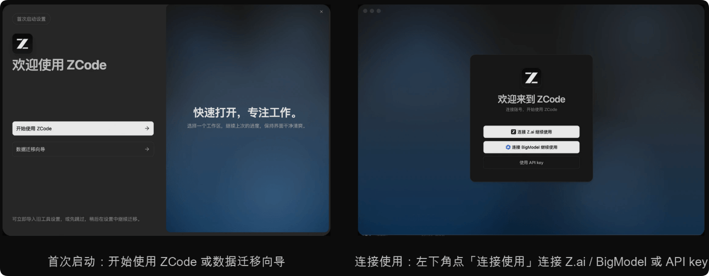
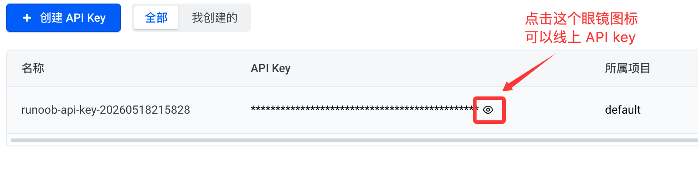
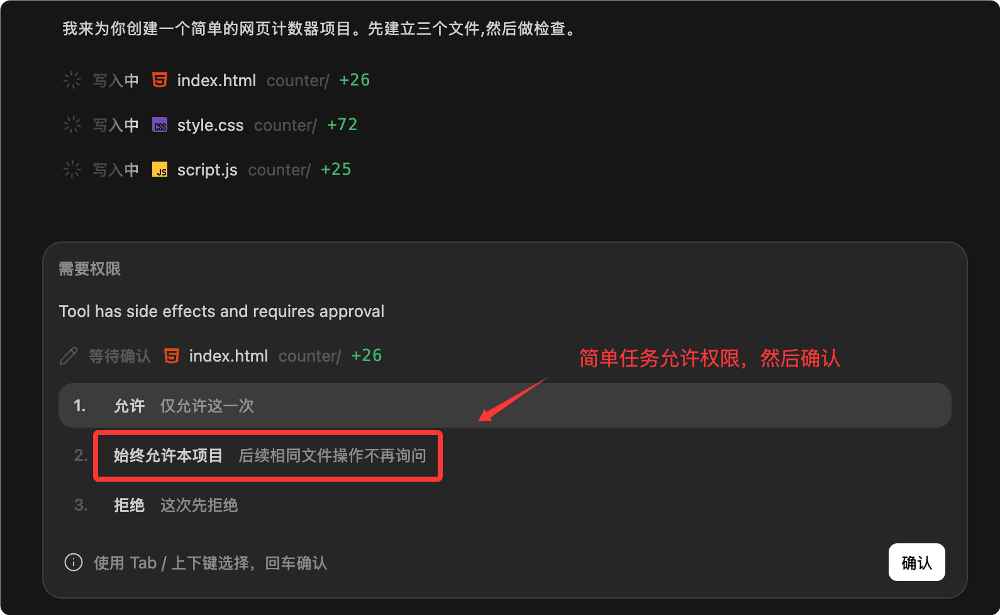

Tutorial de introducción a ZCode
ZCode es el entorno de desarrollo para agentes inteligentes de desarrolladores lanzado por Zhipu, también conocido como Agentic Development Environment, abreviado ADE. A diferencia de los editores tradicionales, incorpora un asistente de IA que puede operar proyectos en profundidad, capaz de ver el proyecto, modificar archivos, ejecutar comandos y organizar los cambios de código.
ZCode puede conectar agentes de IA a proyectos reales y completar de un solo paso todo el flujo de desarrollo: análisis de requisitos, modificación de código, pruebas, revisión de código y verificación previa al lanzamiento.
Las herramientas de IA comunes solo pueden generar fragmentos de código sueltos. ZCode permite dar tareas de desarrollo completas en lenguaje natural, adecuado para quienes quieren impulsar el desarrollo con lenguaje natural.

El núcleo de ZCode no es un simple chat, sino avanzar de forma continua una tarea completa en torno a un objetivo de desarrollo.
| Concepto | Descripción | Escenarios adecuados |
|---|---|---|
| ZCode | Entorno de desarrollo orientado a agentes de IA. | Querer impulsar el desarrollo de proyectos reales con lenguaje natural. |
| ZCode Agent | Agente encargado de entender tareas, leer contexto, modificar código y verificar resultados. | Desglose de requisitos complejos, generación de código, depuración, pruebas. |
| Long Horizon Task | Tareas de desarrollo largas y con muchos pasos. | Refactorizar módulos, corregir bugs complejos, implementar funcionalidades completas. |
| Espacio de trabajo | Lugar donde ZCode gestiona archivos del proyecto, terminal, estado de Git y contexto de tareas. | Abrir un proyecto existente o crear un proyecto nuevo en un directorio. |
Para qué sirve ZCode
ZCode es adecuado para trabajos de desarrollo que requieren contexto continuo: puede leer archivos, entender la estructura del proyecto, ejecutar comandos y dar un resumen después de los cambios.
Estas capacidades son adecuadas para proyectos reales, no solo para preguntas puntuales.
| Tipo de tarea | Qué se le puede pedir a ZCode | Prompt típico |
|---|---|---|
| Desarrollo de nuevas funciones | Según los requisitos, revisar la estructura del proyecto, crear o modificar archivos relacionados. | Ayúdame a añadir una página de inicio de sesión a este proyecto y conectarla con las rutas existentes. |
| Corrección de bugs | Localizar la causa del error, modificar el código y ejecutar comandos de verificación. | Corrige el problema de parpadeo de la página al pulsar el botón en el móvil. |
| Comprensión de código | Organizar las relaciones entre módulos y explicar la cadena de llamadas de una función desde la entrada hasta la implementación. | Ayúdame a explicar cómo funciona el flujo de pago de este proyecto. |
| Revisión de código | Comprobar los riesgos de los cambios y sugerir comentarios en línea o direcciones de mejora. | Haz una review de los cambios actuales, prestando especial atención al riesgo de regresión. |
| Preparación para el lanzamiento | Generar changelog, organizar release notes y revisar el estado de Git. | Genera un borrador de notas de versión a partir de los commits recientes. |
Instalar ZCode
Entra en el sitio web oficial en chino de ZCode y desde la página de inicio puedes hacer clic en el enlace de descarga.
La dirección del sitio web oficial eshttps://zcode.z.ai/cn。
La página oficial muestra las versiones disponibles para descargar, con soporte para Windows, macOS y Linux. Normalmente la web oficial muestra el botón de descarga para el sistema actual:

Después de descargar, haz clic para instalar:
Preparación básica después de la instalación
Al iniciar por primera vez, aparecerá la página de "Configuración de primer inicio". Cuando termines, haz clic en "Conectar y usar" en la esquina inferior izquierda para ir a la página de inicio de sesión:

Si quieres usar los servicios de modelos, también necesitas configurar la API Key oCoding Planla configuración correspondiente. También puedes iniciar sesión y luego configurarlo en la página de ajustes:

Actualmente la cuota gratuita oficial es muy limitada, básicamente no llega a ser suficiente. Se recomiendan los siguientes planes Coding Plan:
A continuación tomamos como ejemploel Coding Plan de ByteDance Arkpara configurarlo. Visita la actividad delCoding Plan de Arky suscríbete al plan según tus necesidades. Si no usas mucho, la versión Lite es suficiente; si el uso es muy alto, puedes usar la versión Pro.
Después de comprar con éxito, haz clic en"Crear su API Key"：

y luego en el botón de crear:

Haz clic en el icono del ojito de abajo para ver la API key. Cuando la necesites, cópiala:

La URL base (Base URL) que se configura en diferentes herramientas varía según el protocolo compatible:
- Herramientas compatibles con el protocolo de interfaz de Anthropic:https://ark.cn-beijing.volces.com/api/coding
- Herramientas compatibles con el protocolo de interfaz de OpenAI:https://ark.cn-beijing.volces.com/api/coding/v3
Aquí elegimoshttps://ark.cn-beijing.volces.com/api/coding, la API key la pones tú, en la lista de modelos puedes añadir varios modelos. Aquí se rellenaKimi-K2.6, también puedes añadir otros modelos comoDeepSeek-V4-Pro：

Después de añadirlos, puedes probar si el modelo funciona:

En la esquina inferior derecha del cuadro de diálogo de la página de inicio podemos ver el modelo que hemos añadido:

ZCode ofrece páginas de configuración de API Key, estadísticas de uso, comentarios de usuarios y soporte.

Primer uso de ZCode
Podemos empezar con un proyecto sencillo, pidiéndole a ZCode que cree un pequeño juego de navegador, o que explique la estructura de directorios de un proyecto existente.
Así podemos entender rápidamente cómo trabaja ZCode.
Abrir o crear un espacio de trabajo
El espacio de trabajo puede entenderse como el directorio del proyecto que ZCode está procesando actualmente.
Puedes abrir un directorio de proyecto existente o empezar un proyecto nuevo en un directorio vacío.
ZCode leerá archivos, ejecutará comandos y gestionará cambios en torno a ese directorio.
Nueva tarea
En ZCode, una tarea es la unidad básica para impulsar el trabajo del agente.
En los ejemplos del sitio web oficial se muestra la forma de describir tareas en lenguaje natural.
La página también muestra el atajo de teclado para nueva tarea⌘N。
Ejemplo de nueva tarea:
创建一个智能五子棋网页游戏，包含棋盘、玩家落子、胜负判断和简单电脑对手。

Observar el proceso de ejecución
Cuando la tarea comienza, ZCode analiza el proyecto según el objetivo y avanza paso a paso.
Puedes ver el progreso de la tarea, los registros de ejecución, los cambios de archivos, la salida del terminal y el estado de Git.
Esto es más fiable que copiar un fragmento de código generado por IA, porque puede devolver el código al proyecto real para verificarlo.
| Área de la interfaz | Función | En qué debe fijarse un principiante |
|---|---|---|
| Progreso de la tarea | Muestra el desglose de la tarea actual y su estado de finalización. | Confirmar si el agente avanza según el objetivo. |
| Salida del terminal | Muestra los resultados de ejecución de los comandos. | Prestar atención a si hay errores y si los comandos de verificación pasan. |
| Cambios de archivos | Muestra los archivos añadidos, modificados o eliminados. | Comprobar si los cambios se ajustan a lo esperado. |
| Estado de Git | Muestra el estado de control de versiones del espacio de trabajo actual. | Antes de confirmar, asegurarse de que solo se incluyen los cambios necesarios. |
Un ejemplo completo de introducción
A continuación usamos un proyecto frontend sencillo para demostrar cómo dar tareas a ZCode.
Este ejemplo no depende de un backend, y es adecuado para que los principiantes entiendan el proceso.
Ejemplo
Requisitos:
1. Usar tres archivos: HTML, CSS y JavaScript.
2. Mostrar el valor del contador actual en la página.
3. Proporcionar tres botones: "Sumar uno", "Restar uno" y "Restablecer".
4. Estilo sencillo, adecuado para que lo lea un principiante.
5. Cuando termines, ejecuta las comprobaciones necesarias y dime qué archivos has creado.
Este prompt le indica claramente a ZCode qué crear, qué archivos usar, qué funciones incluir y que debe explicar el resultado al terminar.
Cuanto más específico sea el prompt, más fácil será que la ejecución del Agent cumpla con lo esperado.

Luego aparecerá la información de permisos; concede los permisos y haz clic en confirmar:

Posible estructura de proyecto generada
Si ejecutas esta tarea en un directorio vacío, ZCode puede crear una estructura de archivos similar a la siguiente.
counter-demo/ ├── index.html ├── styles.css └── app.js

Puedes ver el código fuente:

Vista previa del código fuente:

Cómo escribir buenos prompts para ZCode
ZCode puede entender lenguaje natural, pero eso no significa que cuanto más corto sea el prompt, mejor.
Un buen prompt debe incluir objetivo, alcance, restricciones y criterios de aceptación.
Así el Agent podrá planificar y ejecutar de manera más estable.
| Componentes | Descripción | Ejemplo |
|---|---|---|
| Objetivo | Indica qué esperas obtener al final. | Agregar una página de configuración de usuario. |
| Alcance | Indica qué partes deben modificarse y cuáles no. | Solo modifica el frontend, no cambies las interfaces del backend. |
| Restricciones | Especifica el stack tecnológico, el estilo y los requisitos de compatibilidad. | Usar la biblioteca de componentes existente, sin agregar dependencias nuevas. |
| Criterios de aceptación | Indica cómo determinar si se logró el éxito al finalizar. | Que npm test pase y que el diseño se vea correctamente en dispositivos móviles. |
Ejemplo
Alcance:
- Solo modificar los archivos relacionados con la página de inicio de sesión.
- No modificar las interfaces del backend.
- No agregar dependencias de terceros.
Requisitos:
- Mantener el estilo visual actual.
- Adaptar a pantallas de móvil de 375px de ancho.
- Después de modificar, indica qué archivos se cambiaron.
- Si el proyecto tiene comandos de prueba o verificación, ejecútalos y reporta los resultados.
No escribas solo "ayúdame a optimizarlo". Ese tipo de prompt tiene un alcance demasiado amplio y al Agent le resulta difícil saber qué es lo que realmente quieres.
Flujos de trabajo comunes
La ventaja de ZCode es que conecta todo el proceso de desarrollo.
Puedes llevar una tarea desde la descripción del requisito hasta la modificación del código, y luego a la verificación y el resumen.
Crear una funcionalidad desde cero
Cuando vayas a crear una nueva funcionalidad, define claramente sus límites.
Si el proyecto ya tiene un stack tecnológico, pídele a ZCode que siga el estilo existente.
Ejemplo
Requisitos:
- Usar la forma de enrutamiento existente en el proyecto.
- Reutilizar los componentes de diseño de página existentes.
- La página debe incluir tres secciones: título, introducción e información de contacto.
- No agregar dependencias.
- Al finalizar, enumera los archivos agregados y modificados.
Entender código existente
Cuando heredes un proyecto desconocido, puedes pedirle a ZCode que explique la estructura antes de modificar el código de inmediato.
Esto ayuda a reducir el riesgo de cambios incorrectos.
Ejemplo
Ayúdame a revisar la estructura del proyecto actual y explica:
- Dónde está el punto de entrada de la aplicación.
- Dónde se definen las rutas.
- Dónde está encapsulada la solicitud de API.
- Cuáles son los comandos de compilación y de prueba.
Revisión antes de confirmar
Antes de hacer commit del código, puedes pedirle a ZCode que revise los cambios actuales.
Puede ayudarte a detectar archivos omitidos, posibles regresiones y faltantes de pruebas.
Ejemplo
Verifica especialmente:
- Si hay bugs evidentes.
- Si se rompe alguna funcionalidad existente.
- Si hay variables sin usar o código de depuración.
- Si es necesario agregar pruebas.
Primero entrega una lista de problemas, no modifiques archivos directamente.
Confirmación de seguridad y permisos
ZCode inicia un proceso de confirmación antes de comandos críticos, modificaciones de archivos y operaciones de alto privilegio. Esto evita que el Agent ejecute operaciones peligrosas sin que lo sepas.

Podemos leer el contenido de confirmación antes de ejecutar el comando y luego decidir si lo permitimos.
| Tipo de operación | Por qué se necesita confirmación | Práctica recomendada |
|---|---|---|
| Modificar archivos | Cambia el código del proyecto. | Verifica que la ruta del archivo y el objetivo de la modificación sean correctos. |
| Eliminar archivos | Puede causar pérdida de datos. | Revisa el contenido del archivo antes de eliminarlo y haz una copia de seguridad si es necesario. |
| Ejecutar comandos | El comando puede instalar dependencias, iniciar servicios o cambiar el entorno. | Confirma el propósito del comando y evita ejecutar comandos de alto riesgo que no conozcas. |
| Operaciones de Git | Puede afectar el historial de commits o el repositorio remoto. | Revisa git status antes de hacer commit y push. |
Si no estás seguro de si un comando es seguro, pídele a ZCode que explique para qué sirve en lugar de permitir su ejecución directamente.
Comandos comunes y formas de verificación
ZCode puede usar la terminal para ejecutar comandos del proyecto.
Los comandos específicos dependen del stack tecnológico de tu proyecto.
A continuación se enumeran algunos comandos de los ejemplos oficiales y de escenarios de desarrollo comunes.
| Comando | Función | Ejemplo |
|---|---|---|
| pwd | Ver el directorio actual. | Confirmar si la terminal actual de ZCode está en el directorio del proyecto. |
| git status --short | Ver los cambios de Git en formato resumido. | Confirmar qué archivos han sido modificados antes del commit. |
| node --check app.js | Revisar la sintaxis de archivos JavaScript. | Verificar si app.js tiene errores de sintaxis. |
| npm test | Ejecutar las pruebas del proyecto. | Adecuado para proyectos de JavaScript o frontend. |
| npm run build | Ejecutar la compilación del proyecto. | Confirmar que el proyecto se puede empaquetar correctamente antes de publicarlo. |
$ git status --short M src/App.js M src/styles.css
La salida anterior indica que se modificaron dos archivos.
Antes del commit, debes confirmar que esos cambios son los esperados.
Resumen de capacidades avanzadas
Además de la ejecución de tareas en escritorio, la documentación de ZCode menciona algunas capacidades avanzadas.
En la etapa inicial no necesitas dominarlas todas de una vez, pero puedes ir conociendo qué problemas resuelven.
| Capacidad | Descripción | Cuándo usarla |
|---|---|---|
| Remote Control | Hacer seguimiento o controlar las tareas del Agent de forma remota. | La tarea tarda bastante y quieres seguir viendo el progreso después de alejarte de la computadora. |
| Bot Channel | Activar y avanzar tareas mediante un Bot de Feishu o WeChat. | Colaboración en equipo, seguimiento desde móvil y envío de instrucciones adicionales de forma remota. |
| Skill | Proporcionar capacidades o flujos especializados para tareas específicas. | Para procesar repetidamente tareas del mismo tipo, como auditorías de seguridad, generación de documentación y ejecución de pruebas. |
| Servidor MCP | Conectar al Agent con herramientas externas o fuentes de datos. | Cuando se necesita conectar bases de datos, bases de conocimiento, sistemas internos o herramientas especializadas. |
| Subagentes | Hacer que diferentes Agents manejen diferentes subtareas. | Cuando una tarea grande requiere exploración paralela, revisión o trabajo dividido. |
Preguntas frecuentes para principiantes
A continuación, algunos problemas comunes al empezar a usar ZCode.
¿ZCode modificará mi proyecto automáticamente sin orden?
Las operaciones críticas de ZCode pasan por un proceso de confirmación.
Debes revisar los archivos que va a modificar y los comandos que va a ejecutar antes de permitirlo.
Si solo quieres que lea el proyecto, puedes escribir explícitamente "no modifiques archivos" en el prompt.
¿Debo pedirle a ZCode que haga muchas cosas a la vez?
No se recomienda que los principiantes den tareas demasiado grandes desde el principio.
La mejor manera es dividir la tarea en partes más pequeñas.
Por ejemplo, primero pídele que entienda la estructura del proyecto, luego que modifique un módulo concreto y, al final, que ejecute una verificación.
¿Qué hago si una tarea falla?
Primero revisa la salida de la terminal y los mensajes de error.
Luego pídele a ZCode que continúe corrigiendo con base en el error.
No te apresures a empezar una tarea completamente distinta, porque podrías perder el contexto.
¿Cuándo se necesita revisión manual?
Las operaciones que involucran lógica de negocio, permisos, seguridad, pagos, eliminación de datos y publicación deben revisarse manualmente.
La IA puede ayudar a detectar problemas, pero la responsabilidad final sigue siendo del desarrollador.
Consejos de aprendizaje
La mejor forma de aprender ZCode no es memorizar comandos, sino practicar con tareas pequeñas.
Puedes empezar pidiéndole que cree una página simple y luego que explique el código generado.
Después intenta que corrija un bug pequeño y observa cómo lee archivos, modifica código y verifica los resultados.
Cuando te familiarices con esta forma de desarrollo orientada a tareas, integra gradualmente capacidades como revisión de código, preparación de lanzamiento, Remote Control y Skill.
Otras extensionesTrata a ZCode como un compañero de desarrollo que opera en proyectos, no como un chatbot que solo responde preguntas. Así será más fácil aprovechar su valor.
Haz clic para compartir notas
<p style="font-size:14px;">¡La nota debe ser una extensión del contenido de este artículo!</p><br> <p style="font-size:12px;"><a href="../tougao.html" target="_blank">Puedes hacer clic aquí para enviar un artículo</a></p> <p style="font-size:14px;"><a href="../w3cnote/runoob-user-test-intro.html" target="_blank">Cómo obtener el código de invitación de registro</a></p> <h3 class="text-muted"><i class="fa fa-info-circle" aria-hidden="true"></i> Antes de compartir notas, debes <a href=";.html" class="runoob-pop">Iniciar sesión</a>!</h3> <p><a href="../w3cnote/runoob-user-test-intro.html" target="_blank">Cómo obtener el código de invitación de registro</a></p>